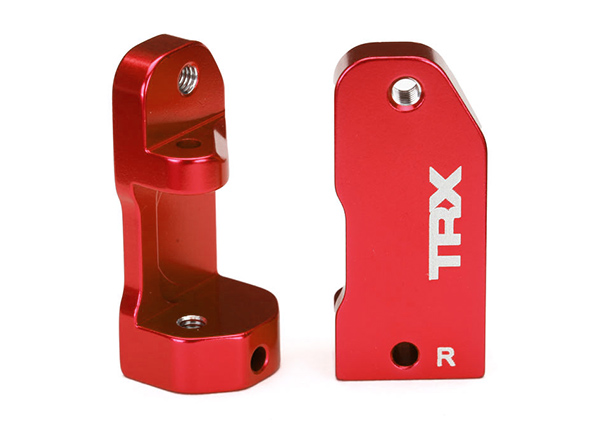
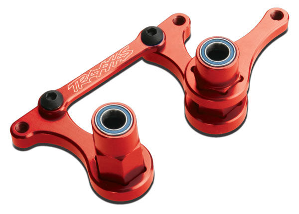
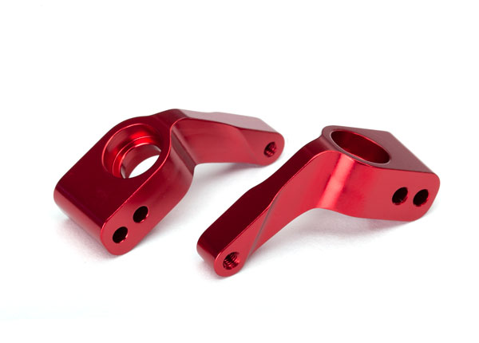
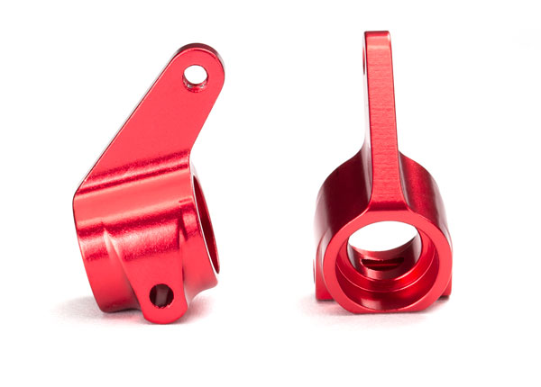

Traxxas Slash 2WD
The 2WD Traxxas Slash is a rugged, high-speed short-course truck designed for intense off-road action. Featuring a sturdy chassis, oil-filled shocks, and aggressive tires, it delivers impressive performance on any terrain. Powered by a potent electric motor and advanced electronics, it offers thrilling speed and precise handling. Water resistant electronics ensure reliability in all weather conditions, while its modular design allows for easy maintenance and customization. Perfect for RC enthusiasts seeking adrenaline-fueled adventures.
this is a list of some of the parts that can be upgraded or replaced on the traxxas 2wd ruster though either traxxas or other after market companies.
while being some of the most expensive upgrades, upgrading the electronics are also the eisiest way to get more power out of your car.
all of these are great ways to make your rc car look great and make it more durable
Caster Blocks
 blue, part #3632aBell Cranks
 blue, part #3743aAxle Carriers
 blue, part #3652aSteering Blocks
 blue, part #3636a